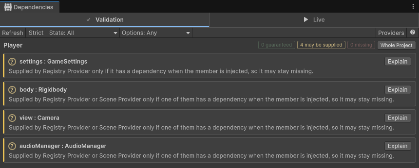
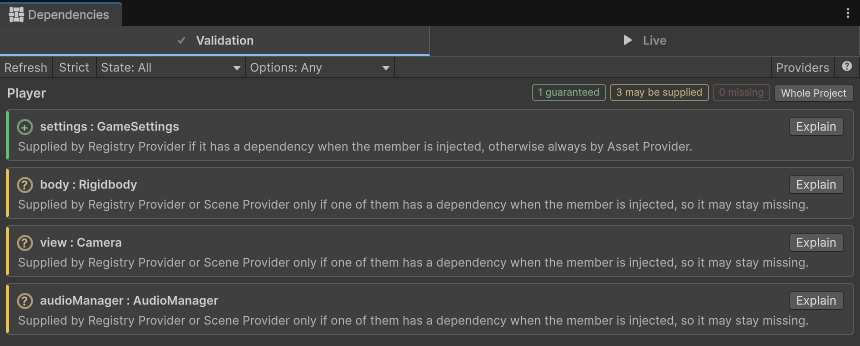
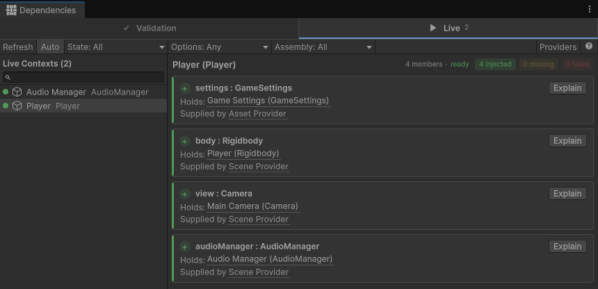

Tutorial: Convert a script to Selvage
Before you start
You need the following:
- A project with Selvage installed. For more information, refer to Install Selvage.
- A new scene, which holds the default Main Camera.
Create the starting scene
The starting scene has a player that finds what it uses in Awake: a component on its own
GameObject, the main camera, an audio manager through a static Instance, and a settings asset assigned
in the Inspector window. To create it, perform the following steps:
- Create the following three scripts.
- In the Project window, create a folder named Settings, select it, and go to Assets > Create > Game Settings.
- Create a GameObject named Audio Manager, and add an Audio Source component and the Audio Manager script to it.
- Create a GameObject named Player, and add a Rigidbody component and the Player script to it.
- In the Inspector window of the Player, set Settings to the Game Settings asset.
- Enter Play mode. The Player jumps, and the Console window displays
Jumped, seen by Main Camera.
using UnityEngine;
[CreateAssetMenu(menuName = "Game Settings")]
public class GameSettings : ScriptableObject
{
public float jumpForce = 5;
}using UnityEngine;
public class AudioManager : MonoBehaviour
{
public static AudioManager Instance { get; private set; }
AudioSource source;
void Awake()
{
Instance = this;
source = GetComponent<AudioSource>();
}
public void PlayJump() => source.Play();
}using UnityEngine;
public class Player : MonoBehaviour
{
[SerializeField] GameSettings settings;
Rigidbody body;
Camera view;
AudioManager audioManager;
void Awake()
{
body = GetComponent<Rigidbody>();
view = Camera.main;
audioManager = AudioManager.Instance;
}
void Start()
{
body.AddForce(Vector3.up * settings.jumpForce, ForceMode.Impulse);
audioManager.PlayJump();
Debug.Log($"Jumped, seen by {view.name}");
}
}Each lookup in Awake is a requirement that only the code shows. AudioManager.Instance is
also null whenever the Player's Awake runs before the Audio Manager's, because Unity
doesn't order the Awake calls of different GameObjects.
Replace the lookups with injected members
To replace the lookups in the AudioManager script, perform the following steps:
- Add
using Selvage;, the namespace of[Inject]. - Add
[Inject]to thesourcefield. - Delete the
Instanceproperty and theAwakemethod.
using Selvage; // 1.
using UnityEngine;
public class AudioManager : MonoBehaviour
{
[Inject] AudioSource source; // 2. Replaces GetComponent
public void PlayJump() => source.Play();
}To replace the lookups in the Player script, perform the following steps:
- Add
using Selvage;. - Replace
[SerializeField]with[Inject]on thesettingsfield. - Add
[Inject]to thebody,viewandaudioManagerfields. - Delete the
Awakemethod.
using Selvage; // 1.
using UnityEngine;
public class Player : MonoBehaviour
{
[Inject] GameSettings settings; // 2. Replaces the Inspector reference
[Inject] Rigidbody body; // 3. Replaces GetComponent
[Inject] Camera view; // 3. Replaces Camera.main
[Inject] AudioManager audioManager; // 3. Replaces AudioManager.Instance
void Start()
{
body.AddForce(Vector3.up * settings.jumpForce, ForceMode.Impulse);
audioManager.PlayJump();
Debug.Log($"Jumped, seen by {view.name}");
}
}Selvage injects the members at the end of Awake, even in a script without an Awake
method, so they're ready in Start. The Scene Provider gives body, view, audioManager and
source, because each is a component in the scene. AudioManager no longer needs its static
Instance, and the Awake order no longer matters.
Without [SerializeField], the reference you set in the Inspector window is gone, and no provider
gives a GameSettings yet.
Validate the members
To check what each member will receive, without entering Play mode, perform the following steps:
- Go to Tools > Selvage > Dependencies.
- Select Validation.
- In the Project window, select the
Playerscript.

Every member shows May Be Supplied. For body, view and
audioManager, that's expected: what a scene holds is only known when the member is injected. The reason on
the settings row names only the Registry Provider:
Supplied by Registry Provider only if it has a dependency when the member is injected, so it may stay missing.The registry holds only the objects your code adds to it, so nothing you set up gives a GameSettings.
In Play mode, settings would stay null, and the Console window would display an error that
names it.
Provide the settings asset
A Provide Definition is an asset that makes Selvage provide the other assets of its folder. To provide the Game Settings asset, perform the following steps:
- In the Project window, select the Settings folder.
- Go to Assets > Create > Selvage > Provide Definition.
- Select the
Playerscript again.
The settings row now shows Guaranteed:
Supplied by Registry Provider if it has a dependency when the member is injected, otherwise always by Asset Provider.
Every GameSettings member in the project now receives this asset, with no reference to set in each
Inspector window. For more information, refer to Provide assets.
Inspect the members in Play mode
To display what each member holds, perform the following steps:
- Enter Play mode. The Player jumps, and the Console window displays
Jumped, seen by Main Camera, as before the change. - In the Dependencies window, select Live.
- In the Hierarchy window, select the Player GameObject.
The Live tab lists each member of the Player as Injected, with the object it holds and the provider that gave it. For more information, refer to Inspect injected members.

Next steps
- Provide your own classes: replace a singleton that isn't a
component or an asset with a class marked
[Provide]. - Options: accept a missing dependency, or wait for one that loads.
- Inject with scopes: inject every member of a class without marking each one.